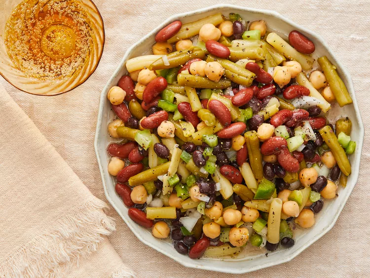

Bean Salad
Description
This bean salad is delicious. I'd turned my nose up at this for years, but suddenly I can't get enough of it.
Ingredients
- 1 (15.5 ounce) can garbanzo beans, drained
- 1 (14.5 ounce) can kidney beans, drained
- 1 (14.5 ounce) can black beans, drained
- 1 (14.5 ounce) can green beans, drained
- 1 (14.5 ounce) can wax beans, drained
- ½ cup chopped green pepper
- ½ cup chopped onion
- ½ cup chopped celery
- ¾ cup white sugar
- ½ cup salad oil
- ½ cup vinegar
- ½ teaspoon salt
- ½ teaspoon ground black pepper
Steps
- Gather all ingredients.
- Combine garbanzo beans, kidney beans, black beans, green beans, wax beans, green pepper, onion, and celery in a large bowl; toss to mix.
- Whisk together sugar, oil, vinegar, salt, and pepper in a separate bowl until sugar is dissolved; pour over bean mixture. Mix well.
- Refrigerate salad for 8 hours to overnight before serving.